Das Tagebuch
Die Tour
Jeden Abend in der Lodge geschrieben, meist mit leerer Powerbank und kalten Fingern.
Anreise
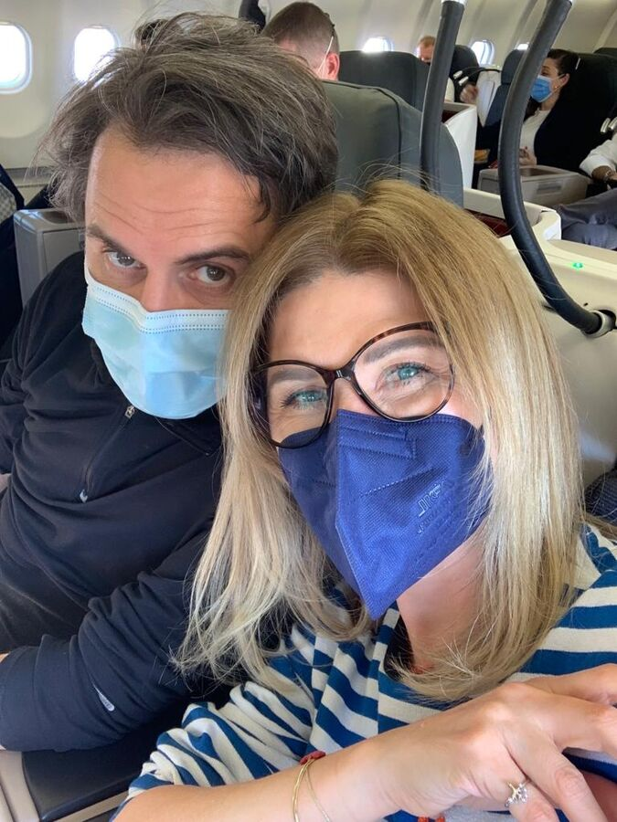
17. April 2022
Es geht los …
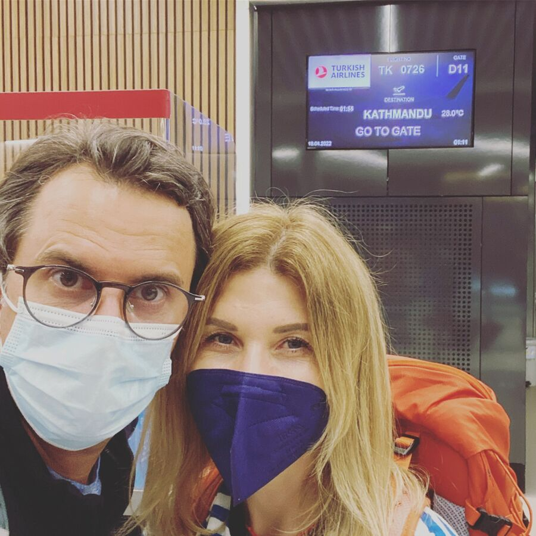
18. April 2022
Reisetag

18. April 2022
Ankunft in Kathmandu
Unterwegs im Khumbu
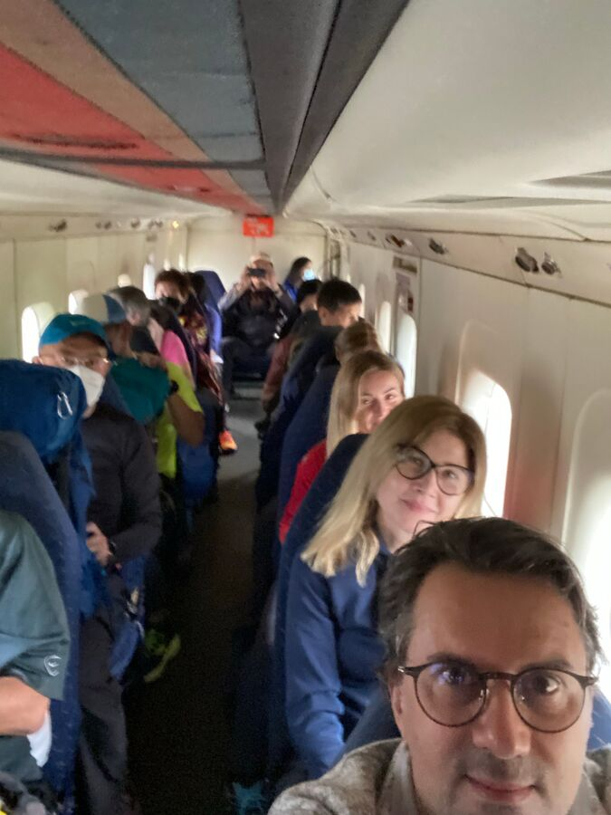
Tag 1
Auf geh‘s
von Lukla nach Phakding
7,6 km−330 Hm
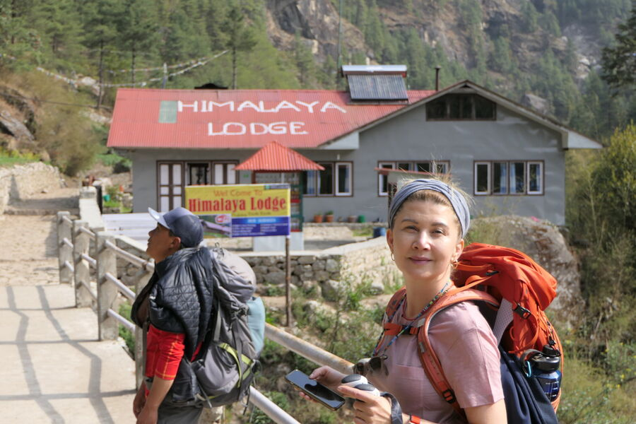
Tag 2
Auf nach Namche Bazar
von Phakding nach Namche Bazar
11,4 km+808 Hm
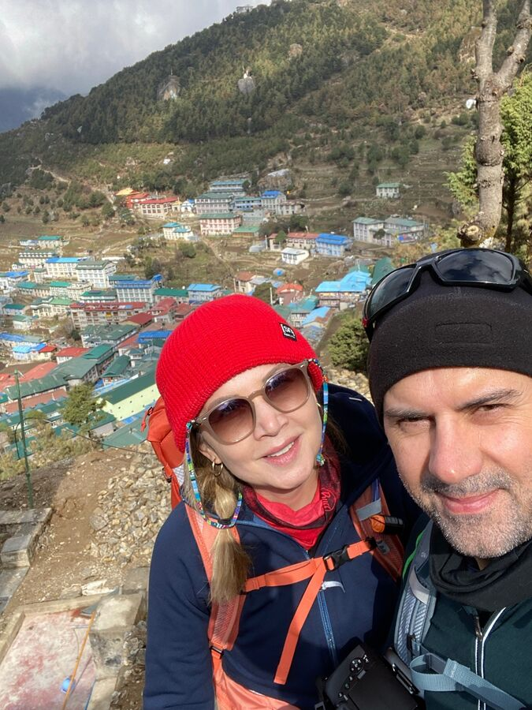
Tag 3
Akklimatisierungstag 1
in Namche Bazar
1,5 km+335 Hm
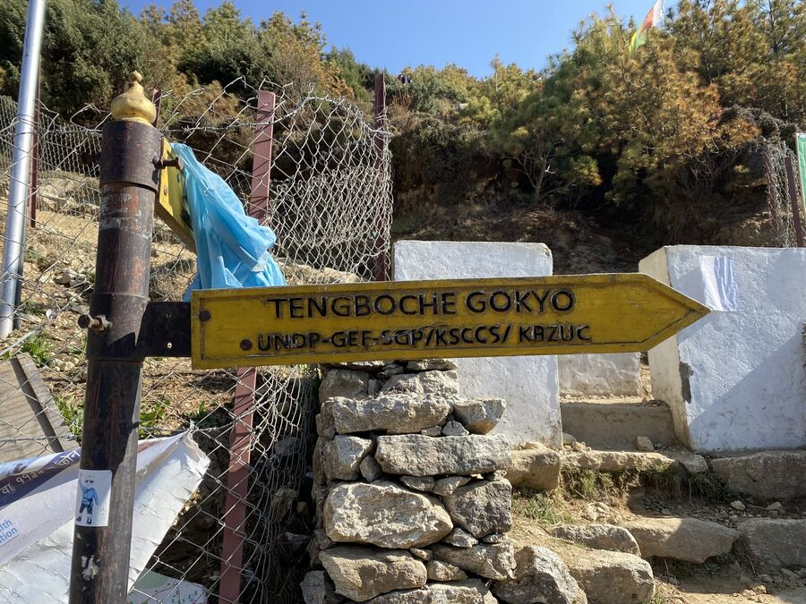
Tag 4
Der erste Blick auf den Mount Everest
von Namche Bazar nach Deboche
10,4 km+525 Hm
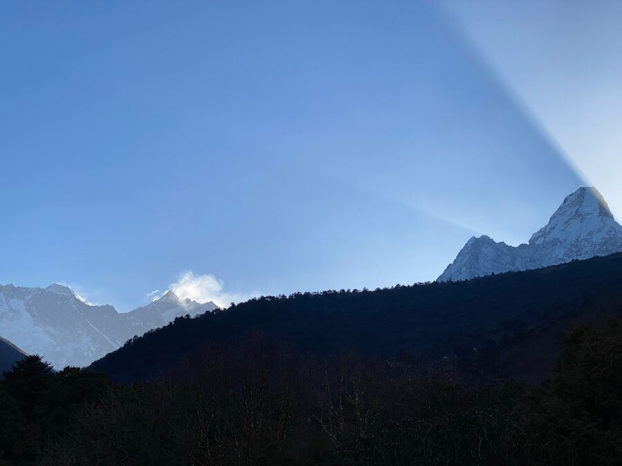
Tag 5
Wir kommen dem Ziel näher
von Deboche nach Dingboche
10 km+572 Hm
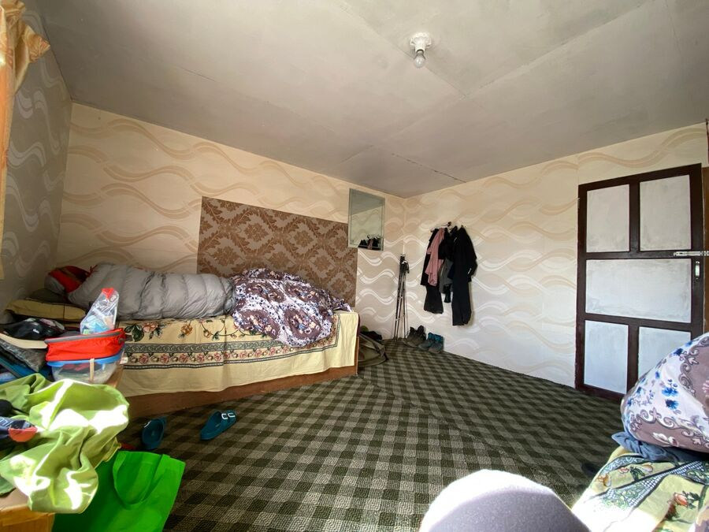
Tag 6
Akklimatisierung, die Zweite
in Dingboche
1,2 km+350 Hm
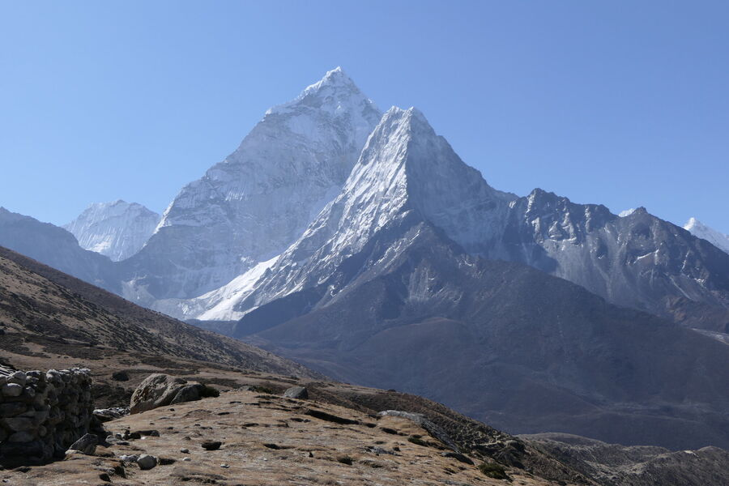
Tag 7
Am höchsten Gletscher der Erde
von Dingboche nach Lobuche
8 km+576 Hm
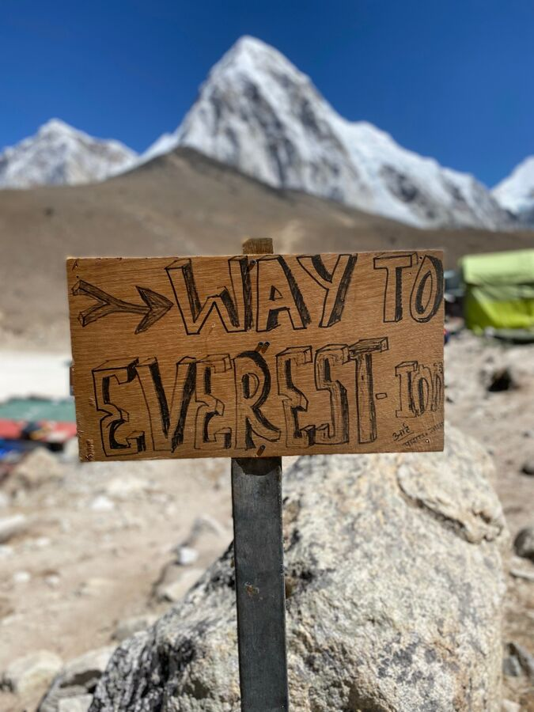
Tag 8
Geburtstag am Basecamp
von Lobuche nach Gorak Shep und zum EBC
13,2 km+450 Hm
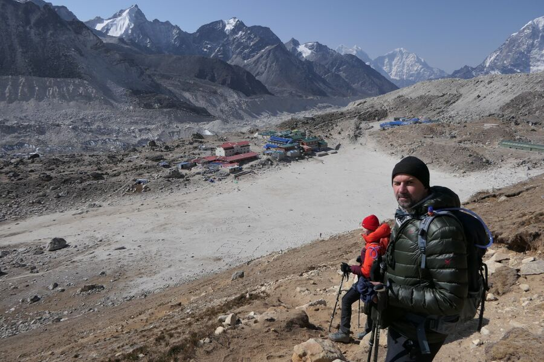
Tag 9
5.600 Meter
von Gorak Shep nach Dzonglha
14,7 km+245 Hm
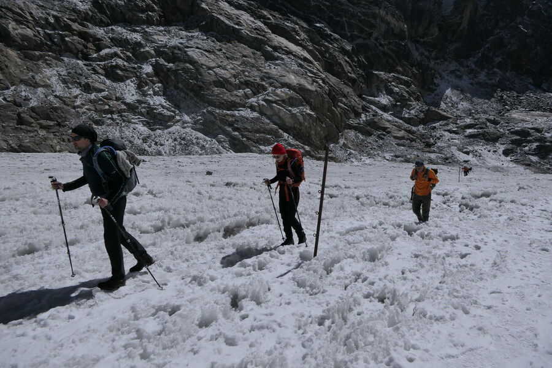
Tag 10
Das Eisfeld
von Dzonglha nach Dragnag
8,3 km−800 Hm
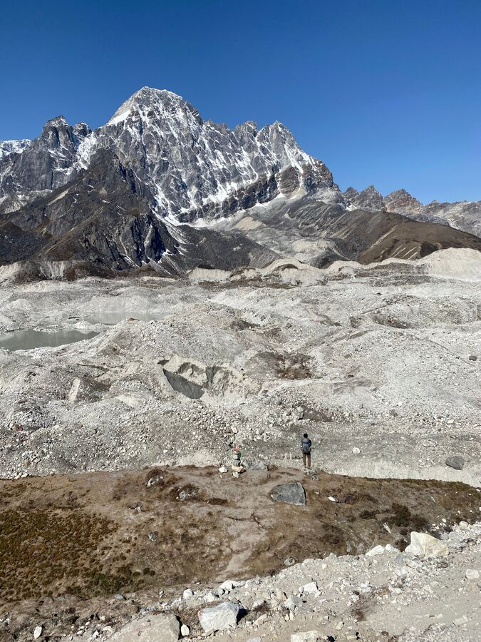
Tag 11
Über den Gletscher
von Dragnag nach Dole
15,6 km−620 Hm
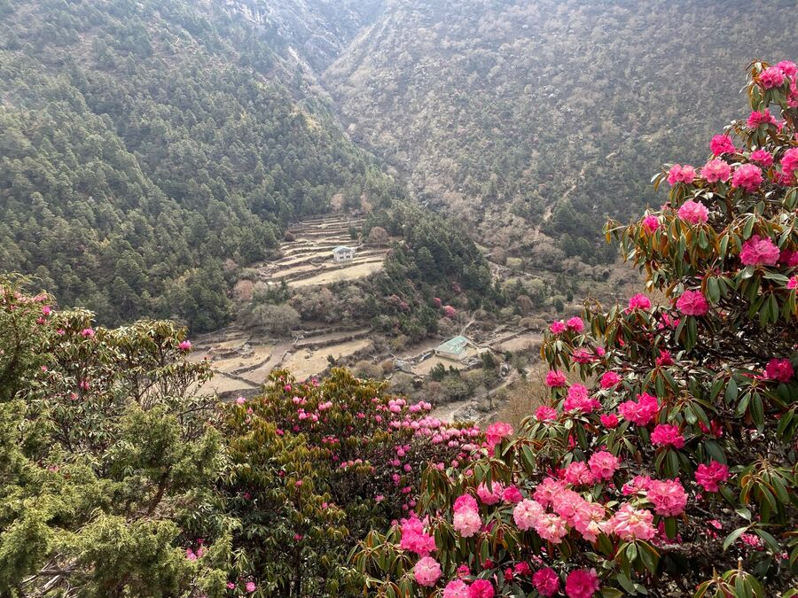
Tag 12
Schnellstmöglich Absteigen
von Dole nach Namche Bazar
11,7 km−610 Hm
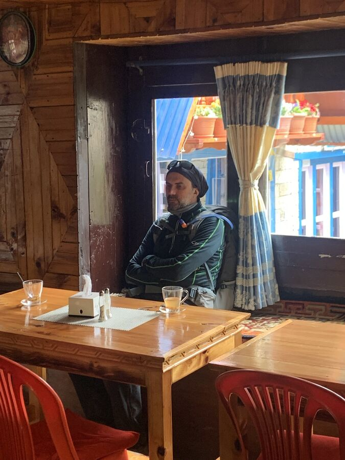
Tag 13
Mit der Brechstange
von Namche Bazar nach Lukla
19,2 km−582 Hm
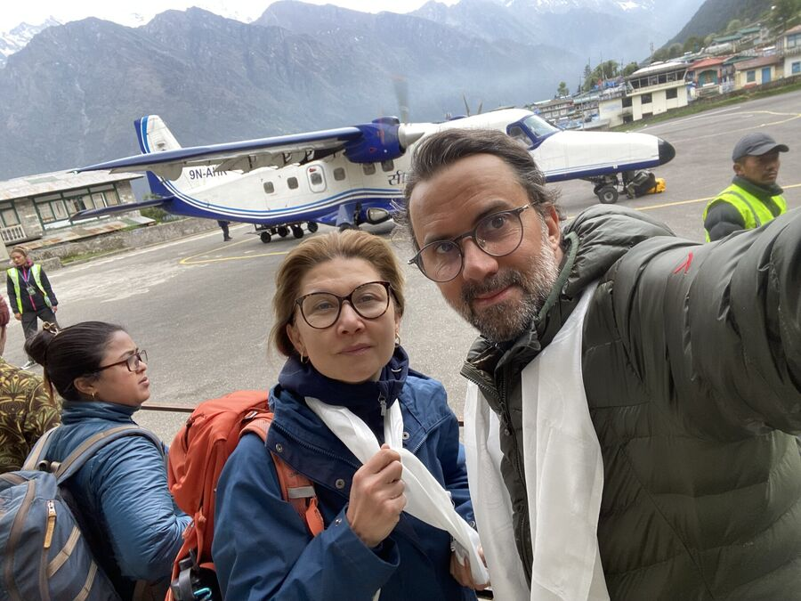
Tag 14
Bye Bye Khumbu
von Lukla nach Kathmandu
−1.480 Hm
Dezember 2021 bis April 2022
Vorbereitung
Planung, Training, Ausrüstung: alles, was vor dem Abflug passiert ist.
- Gewicht am AbreisetagHeute am Abreisetag habe ich mich noch einmal gewogen. 77,2 Kilo sind in Ordnung. 22,4% Körperfettanteil nicht gerade toll, aber besser als bisher. Ich bin wirklich gespannt, wie das …
- PackenWir dürfen auf dem Flug von Kathmandu nach Lukla 15 Kilo Gepäck mitnehmen. 10 Kilo im Seesack und 5 Kilo im Tagesrucksack. Alles wird noch einmal schön ordentlich in Beuteln verstaut, damit …
- Der Countdown beginntNun ist es nur noch eine Woche, bis unsere Trekking-Tour nach Nepal beginnt. Irgendwie sollte es jetzt auch langsam losgehen, wir werden unruhig … In den letzten Wochen haben wir noch viele …
- Etappen AnimationNachfolgend ist unsere Tour mit den Highlights animiert:
- AusrüstungIn den letzten beiden Wochen haben wir uns die Ausrüstung zugelegt. Das heißt, wir haben hauptsächlich die Ausrüstung von Yesim gekauft. Einige Sachen von den letzten Touren nach Nepal und …
- Laufleistung FebruarTrotz 3 Tage weniger habe ich im Februar mein Laufpensum mit 154 Km im Vergleich zum Vormonat noch steigern können. Knie und Rücken halten soweit. Ich bin aber mehr gegangen als gelaufen, …
- Laufleistung JanuarDer Januar ist vorbei. Nach anfänglichen Schwierigkeiten habe ich mein Trainingspensum langsam erhöht. Aufgrund des wirklich fiesen, kalten Wetters habe ich mich entschieden, anders als …
- Die Flüge sind gebuchtNachdem ich die Reise gebucht habe, sind nun auch die Tickets gebucht. Wir fliegen von Düsseldorf über Istanbul nach Kathmandu mit Turkish Airlines. Die Verbindung ist für uns die beste und …
- ReisedatenHeute habe ich die Tour endgültig gebucht und Flüge herausgesucht. Hier die Eckdaten: Die Tour wird durchgeführt von Himalayanwonders .
- Die Etappen17. April: Düsseldorf – Istanbul – Kathmandu 18. April: Kathmandu: Ankunft 19. April: Kathmandu – Lukla (Flug) – Phakding 20. April: Phakding – Namche Bazaar 21. April: Namche Bazaar: …
- Körperliche VerfassungKnie & Rücken Ich muss es zugeben: 2021 war kein gutes Jahr und ich war noch nie so schwer körperlich angeschlagen. Das führe ich tatsächlich auch auf Corona zurück, denn ich hatte 2020 …
- Die PeaksDie Strecke beinhaltet 4 Punkte über 5.000 Meter Höhe: Der Gokyo Ri bei 5.357 m Das Base Camp des Mount Everest (Nepalesisch: „Sagarmatha“) bei 5.364 m Der Cho La-Pass bei 5.420 m Der Kala …
- Es geht wieder los!Nach 2009 werde ich im April 2022 das zweite Mal nach Nepal aufbrechen mit dem Ziel Mount Everest Base Camp . Diesmal begleitet mich meine Frau Yesim, die dort oben ihren Geburtstag feiern …